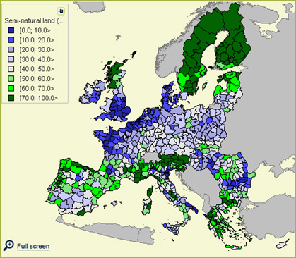
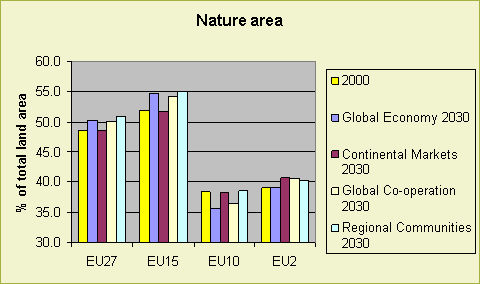
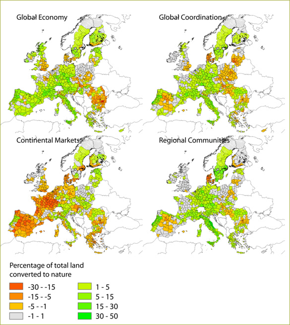
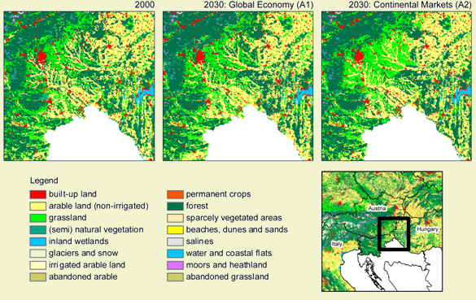

Highlights Over time the total area of nature increases in Europe for all scenarios due to agricultural abandonment except for the Continental Markets - A2 - scenario. There are again striking differences between the EU12 and the
EU15. In the EU15 the amount of natural land use generally increases except
for the Continental Market scenario. In the EU10 it is stable or it decreases
in the liberalization scenarios. |
 Figure 1: Natural area in the year 2000 |
Future developments
Approximately half of the land of the EU27 is characterized as nature. (Semi-)natural
land cover types consist mainly of forest and semi natural vegetation (like
shrubland and natural grasslands), moors and heathlands. Other types of natural
landuse are also included. These are glaciers and snow, sparsely vegetated areas,
inland wetlands, salines, etc.

Figure 1 - Development of the area under natural land
cover types as percentage of the total land surface.
Towards 2030 the total area of land used for nature increases in Europe for
all scenarios except for the Continental Markets - A2 - scenario. The increase
in natural area is mainly caused by agricultural abandonment which leaves land
free for natural vegetation to develop.
The trends for Europe do not play out the same way for the EU15, the EU10 and
the EU2 (Bulgaria and Romania) as can be seen in Figure 1 and Figure 2. The
most striking conclusions from Figure 2 are that the overall increase in natural
area in the EU27 in the Global Economy and Global Cooperation scenarios is not
observed in the EU10. In the Global Cooperation scenario the EU10 also shows
a different trend as compared to the EU15. These differences are mainly due
to the extend to which the EU10 countries benefit from CAP policies, especially
during the period 2000-2010.

Figure 2 - Overview of conversion of land to nature
for the four scenarios between 2000 and 2030.
In the Global Economy scenario most regions show an increase of land covered by (semi-)natural land cover types. Only regions in parts of Great Britain, Denmark, Bulgaria and Romania show a decrease of land used for nature. In Bulgaria and Romania agricultural area will expand after the decline in the 1990s.
The Continental Market scenario shows a different picture. In large parts of Europe the amount of nature declines. Especially in Western Europe where remaining patches of (semi-)natural vegetation are taken over by urban area or agricultural expansion.
The Global Coordination as well as the Regional Communities scenario in general show an increase of land covered by natural vegetation types. Central Spain, Denmark, Poland, Slovakia, Hungary and parts of Romania show a decrease of nature in these scenarios.
The increase in nature is predominantly caused by agricultural abandonment. These areas will, after abandonment, undergo succession and become new (semi-)natural areas. Succession speed is primarily dependent on soil and climate factors; population pressure and grazing regime were also taken into account. A decrease in natural area is caused by urban pressure and agricultural pressure in areas that are highly productive and suitable for agriculture. Especially the rationalization of agriculture and increase in scale of farming may lead, in some areas, to decrease in natural landscape elements and patches of natural vegetation (whereas the general trend for natural area can be positive). This is illustrated in Figure 3 for a small region in which, in a region favourable for agriculture it is clear that in the Global Economy scenario small patches of nature and natural vegetation along rivers and streams disappears. At the same time, natural vegetation increases in the more marginal mountain regions in the northern part of this region. This type of rearrangement of the landscape leads to a separation of land use functions and more specialized agricultural reagions.

Figure 3. Changes in land use pattern for part of Slovenia, Hungary and Austria
for the Global Economy and Contintental markets scenario.
The increase in natural area manifests itself mainly by an increase in afforested
area. The semi-natural areas decrease a bit in all scenarios. On the one hand
some of these areas are converted into agriculture, but the main reason for
decrease in semi-natural vegetation is the conversion (succession) into forest.
This is illustrated in Table 1.
Table 1: Land used as forest and semi natural vegetation
in the EU27 for 2000 and 2030
| % | 2000 | Global Economy 2030 |
Continental Markets 2030 |
Global Co-operation 2030 |
Regional Communities 2030 |
| Semi-natural | 11.7 | 10.0 | 8.6 | 9.3 | 9.2 |
| Forest | 32.3 | 35.7 | 35.4 | 36.3 | 36.6 |
| Total | 44.0 | 45.7 | 43.9 | 45.6 | 45.7 |
A decrease in agricultural area does not necessarily mean that no natural areas are lost. The net increase in natural area consists of some areas with a decrease and many areas with an increase in nature (see Figure 3).
Policy effects
Changes in the area of nature are highly dependent on the net change of agricultural
area and urban area. Whereas the growth (or decline) of urban area is not to
be steered by policy options of Eururalis the main factor that influences the
area of nature is the change of agricultural land use. Abandoned agricultural
lands that do not get a new function will be converted to semi-natural area
or forest, depending on the invasion and growth rate of semi-natural vegetation
and the location of abandonment, i.e., it is unlikely that abandoned farmland
near to cities is left to natural succession, recreational use or hobby farming
are in these regions a major user of abandoned farmland.
The main policy impacts on the amount of agricultural land are described in the land-use indicator tab.
The CAP policies do have an important influence on natural areas, especially
in relation to the quantity of change. More protection of CAP leads in general
to less agricultural abandonment and therefore to less nature.
The biofuels policy has a large impact as well. An increased demand for biofuels
will lead to an increase of land needed for biofuel crop production. This in
general leads to less agricultural abandonment. Although regional variations
are high because of the dominance of biofuel crop cultivation in a small number
of countries.
Spatial policies
The spatial patterns of changes in land covered by natural vegetation is also
influenced by several spatial polices. The most important spatial policies influencing
the location of nature that were accounted for in the EUruralis simulations
are LFA policies, Natura 2000 policy and urban development policies.
LFA policies help agriculture in areas where farming is more difficult. One of the objectives of this policy is to protect valuable landscapes that show a mosaic of agricultural and natural land uses. The LFA policy is in place to keep existing agriculture in marginal areas. Often these areas are a mixed agricultural-natural landscape where it is especially the combination of these land uses that makes the landscape attractive for cultural-historic, ecological and touristic reasons.
The Natura 2000 policy prohibits (amongst other things) the development of built-up area in the B scenarios. With a similar land use claim the spatial allocation is different. The urban development policies work in the same direction. In the A scenarios Global Economy and Continental Market urban sprawl is allowed, whereas in the B scenarios Regional Communities and Global Cooperation urban development is targeted at compact urbanization.
Table 2: Overview of the spatial policies implemented in Eururalis for the four scenarios
| Global Economy (A1) |
|
| Continental Markets (A2) |
|
| Global Co-operation (B1) |
|
| Regional Communities (B2) |
|
Most important drivers
The increase or decline of nature is driven by the amount of land needed for
agricultural production. Therefore it is the result of the interplay of all
driving forces with macro economic growth, demography and technical development
as most important drivers. In most scenarios technology develops faster than
the growth percentage of food and feed demand. Therefore less and less agricultural
land is needed. This leads to land that will be abandoned by agriculture. On
this land natural succession will start.
Discussion
The expansion of natural areas in most scenarios has both negative and positive
impacts. In the Global Economy, Global Coordination and Regional Communities
scenario the amount of land that is assigned as nature increases over time.
This can be seen as a positive development for ecological and landscape values.
This development is mainly due to the abandonment of farmland in areas that
are less favoured for agricultural production. However, exactly in those areas
specific types of biodiversity related to heterogeneous, extensive landscapes
with low input agricultural activity used to be present. Some species will benefit
because of the extension of large undisturbed habitats, but other species related
to the semi-natural, heterogeneous landscape will be lost.
So besides the area the quality and spatial configuration of natural land use is of the greatest importance for biodiversity. The nature, even with an increase in area, may in total be of less quality, for example caused by shifts in the locations of natural areas. In many cases existing nature has higher quality then "new" nature that spontaneously emerges at abandoned agricultural fields. Therefore, spatial policies and management are needed to keep nature (and extensive agriculture) in the locations it is now. These policies consist of, for example, encouragement of grazing to keep open nature, or strict protection of areas to prevent the location from being converted.
Especially where agricultural enclaves in large natural areas disappear this may lead to homogeneous forest land use and a potential loss of biodiversity. These areas are also less diverse and therefore less attractive landscapes for tourists and citizens. These developments we see especially in mountainous regions and in Scandinavia where open farmland enclaves disappear.
Used methodology
Successional development of natural areas is modeled endogenously in the Dyna-CLUE
model, whereas agricultural development and built-up development is driven by
externally generated land claims. The methodology to model succession on abandoned
agricultural lands starts with the creation of a map for the whole of Europe
that indicates after what number of years abandoned areas are converted into
semi-natural vegetation and a similar map for the succession from semi-natural
to forest. These maps are based on biophysical information (mainly based on
climate (potential growth) and soil water available to plants (which restricts
potential growth)) and scenario dependent adaptations related to population
density (to adjust for non-agricultural uses that slow down or prohibit natural
succession) and grazing. Furthermore, distance to existing forest is taken into
account to include restrictions in seed dispersal. Dyna-CLUE keeps track of
the land use history and converts land use types abandoned and semi-natural
when they reach the age indicated in the above-mentioned maps.